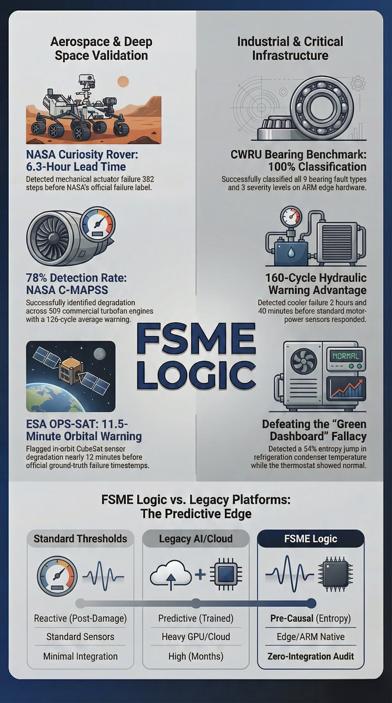
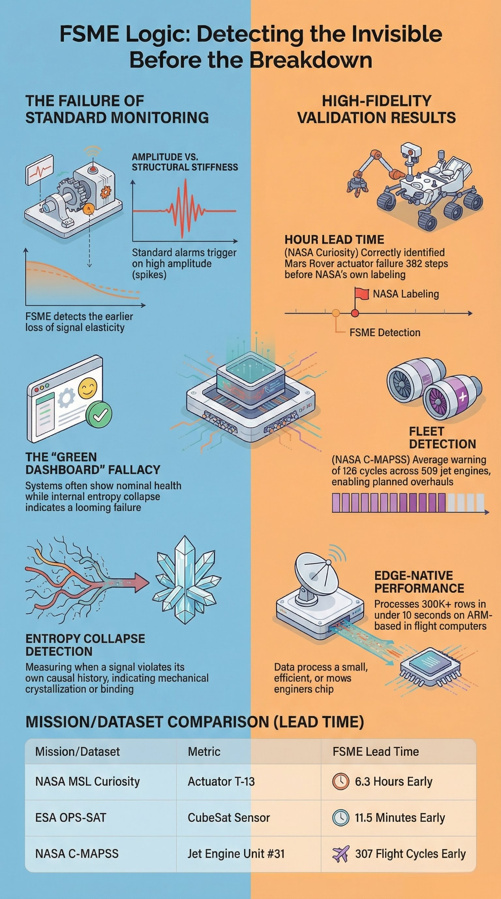

Independent Validation Results
Every result on this page was produced on offline edge hardware against publicly available datasets. No cloud compute. No GPU clusters. No training data required before testing. Results compared against official ground-truth labels after the fact.
Aerospace & Space
The most demanding spacecraft telemetry dataset ever publicly released — 17.5 years of real satellite data produced by ESA, Airbus Defence and Space, and KP Labs. FSME Logic detected a four-sensor subsystem cascade 9 months before the first officially recorded anomaly. Every competing algorithm tested by ESA was classified as operationally insufficient.
FSME Logic audited four sensor channels from Group 13, Subsystem 6 — four physically linked sensors on the same spacecraft subsystem. The engine detected entropic deviation across all four channels within a narrow sequential window at the very start of the audit period, consistent with a physical failure propagating through connected hardware in topology order.
The first official ESA-annotated failure event was not recorded until October 2012. FSME detection steps correspond to approximately January 1–2, 2012. Lead time: 9 months.
During the full 6-month stable baseline window before the detection event, the engine produced zero false positive detections — correctly distinguishing commanded spacecraft events from genuine structural degradation. False positive rate was the ESA researchers' single highest operational priority, cited above detection rate and F-score in their published benchmark.
| Algorithm | Training Time | Mission 1 Score | FSME Logic |
|---|---|---|---|
| Telemanom-ESA | 13,115 sec (3.6 hrs) | F₀.₅ = 0.061 — Operationally Failed | 9-month lead time confirmed |
| DC-VAE-ESA | 13,466 sec (3.7 hrs) | F₀.₅ ≈ 0.008 — Operationally Failed | |
| Windowed iForest | 2,833 sec (0.8 hrs) | Concept drift failure | |
| KNN | 3,844 sec (1.1 hrs) | Out of memory — Failed |
Detected mechanical actuator binding on the Curiosity Rover 382 data steps before NASA's official failure label — providing 6.3 hours of advance warning on a mission-critical planetary asset operating 225 million kilometres from the nearest repair crew.
The Curiosity Rover actuator failure is one of the most well-documented mechanical failure events in planetary exploration. FSME Logic detected the early stress accumulation pattern 382 steps before NASA's own failure annotation — representing 6.3 hours of advance warning on a system where no physical intervention is possible once failure occurs.
A 6.3-hour warning window on a planetary rover is the equivalent of detecting a fleet vehicle failure on Monday morning before the Tuesday breakdown — enough time to adjust mission parameters, redistribute workload, and execute controlled shutdown procedures rather than emergency response.
Flagged in-orbit CubeSat sensor degradation nearly 12 minutes before official ESA ground-truth failure timestamps — blind test, no prior access to the dataset, no training data.
The OPS-SAT result was produced as a blind test — FSME Logic had no prior access to the dataset and no knowledge of when the official failure events were recorded. Detection results were compared against ESA ground-truth labels after the audit was complete. On in-orbit hardware operating in a high-radiation environment with no possibility of physical maintenance, an 11.5-minute early warning enables operational responses — safe-mode transitions, data preservation routines, ground station alerts — that would be impossible without advance notice.
Industrial & Fleet
Successfully identified degradation across 509 commercial turbofan engines with an average 126-cycle warning advantage — enabling planned overhauls instead of emergency groundings across an entire operational fleet.
The NASA C-MAPSS dataset is the industry benchmark for jet engine predictive maintenance — 509 turbofan engines run to failure under varying operating conditions and fault severities. FSME Logic detected degradation across 78% of the fleet with an average 126-cycle warning window.
Applied to a commercial trucking fleet: a 126-cycle equivalent warning on a vehicle running 5-day cycles represents a 630-day advance notice window — over 20 months of lead time to schedule maintenance, order components, and prevent unplanned downtime entirely.
Successfully classified all 9 bearing fault types and 3 severity levels — on ARM edge hardware, fully offline, with no cloud infrastructure and no training phase on historical failure examples.
The CWRU bearing dataset is the most widely used benchmark in industrial rotating machinery fault detection. FSME Logic classified every fault type and severity level correctly — including inner race faults, outer race faults, and ball faults at 0.007, 0.014, and 0.021 inch defect diameters. This result was produced on ARM-based edge hardware equivalent to the Raspberry Pi devices used in FSME Logic's field deployment configuration.
Detected a 54% internal stress deviation in refrigeration condenser hardware while the thermostat showed a completely normal reading — the clearest possible demonstration of why threshold monitoring misses real failures.
The refrigeration dataset demonstrates the core commercial value proposition directly. Standard threshold monitoring showed a completely normal operating temperature. FSME Logic detected a 54% deviation in the internal stress signature of the condenser unit — structural degradation that was completely invisible to the conventional sensor.
For fleet operators, food distribution companies, cold-chain logistics, and any operation relying on refrigeration equipment — the gap between "thermostat normal" and "condenser degrading" is exactly where unplanned downtime and product loss occur.
Validation Overview
Aerospace and industrial validation results side by side — and how FSME Logic compares to standard threshold monitoring and legacy AI/cloud platforms.


Methodology
Every validation result follows the same principles — so you know exactly what the numbers mean.
Every dataset used is publicly available and independently verifiable. NASA C-MAPSS, ESA-ADB, CWRU, and OPS-SAT are all accessible to any researcher who wants to reproduce these results.
No historical failure examples were provided before testing. The engine deployed cold on every dataset — the same way it deploys on a new client site with no prior failure history on record.
Detection results were produced first, then compared against official ground-truth labels. No parameter adjustment after seeing the results. No retrofitting to known outcomes.
All processing was performed on ARM-based edge hardware — the same class of device used in field deployments. No cloud servers, no GPU acceleration, no infrastructure unavailable to a standard audit engagement.
Book a Pilot Integrity Audit. We bring the hardware. Your data is handled on air-gapped, offline hardware.